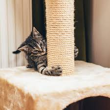

Como educar gatos a usarem o arranhador: conheça 5 dicas

De fato, gatos adoram arranhar! O hábito faz parte do instinto felino e ajuda os animais a relaxar e marcar território. É por isso que os arranhadores estão entre os acessórios mais importantes na vida de um bichano. No entanto, muitos tutores ainda têm dúvidas de como educar gatos a usarem o arranhador. Essa simples atitude de passar a unha por todos os objetos, realiza diversas funções vitais do seu bichano e quando não é feita, pode acarretar em diversos probleminhas. Por isso, a Petz vai te mostrar 5 dicas maravilhosas para adestrar gatos com relação a isso e tornar a vida do seu melhor amigo melhor. 1. Escolha um tamanho adequado: Sabe aqueles brinquedos de parque de diversões que são o máximo na infância, mas perdem a graça conforme a gente cresce? Com o arranhador dos gatos é a mesma coisa! Muitos tutores adquirem um arranhador pequeno para o pet ainda filhote e esquecem de trocá-lo por um maior quando o animal cresce. De acordo com a Dra. Camille Oliveira, médica-veterinária da Petz, o arranhador deve ser grande o suficiente para que o gato consiga ficar em pé, se esticar e se espreguiçar. “Para um arranhador vertical, o ideal é pensar nele como se fosse um tronco de árvore”, diz a especialista. “E ele também não pode cair quando o gato tenta arranhá-lo.” 2. Respeite as preferências do pet: Apesar da popularidade dos arranhadores verticais, nem todos os bichanos referem arranhar nessa posição. Por isso, para acostumar gato com arranhador é necessário analisar a preferência do pet, já que alguns dos bichanos gostam de arranhar na horizontal e essa preferência ajuda no processo de despertar nele o interesse pelo acessório. Para descobrir se seu gato é do tipo que prefere arranhar na vertical ou na horizontal, não tem segredo: basta observar o sentido dos arranhões nos objetos da casa, esse é uma dica de como educar gatos. 3. Capriche na escolha do local: Levando em conta que os gatos arranham como forma de marcação de território, a Dra. Beatriz Alarcon, também médica-veterinária da Petz, diz que deixar o arranhador em um cantinho escondido da casa é o mesmo que não oferecer o acessório ao felino. Mas isso não significa que o arranhador deva ficar em um local movimentado. “Esse é um momento de prazer e relaxamento para o gato. Deixar o arranhador em um local de passagem pode gerar estresse ao animal e até fazer com que ele perca o interesse pelo brinquedo”, completa a Dra. Camille Oliveira. As veterinárias sugerem que você observe os móveis da casa que o gato mais costuma arranhar e procure deixar o arranhador próximo a eles. 4. Aposte na erva do gato: Para gatos que não estão dando a menor bola para o arranhador, uma dica é tentar chamar a atenção do bichano para o acessório com a ajuda da erva do gato. Feita a partir da Nepeta caperia desidratada, a erva serve para atrair o animal e para estimular os instintos felinos, como é o caso do ato de arranhar. Já é possível encontrar versões da erva em spray, o que facilita a aplicação no arranhador e evita um comportamento agressivo do gato. 5. Seja criativo: Embora o uso da erva do gato funcione em muitos casos, estima-se que cerca de 25% dos bichanos não se sintam atraídos por ela. Se esse é o caso do seu filho de quatro patas, use a criatividade para chamar a atenção dele para o brinquedo! Você pode, por exemplo, prender no acessório um ratinho de pano, algumas fitinhas ou aprender como fazer um arranhador de gatos. Se nada disso funcionar e o gato seguir ignorando o arranhador e atacando a mobília, não dê broncas. Além de utilizar um spray para gato não arranhar os objetos da casa, é necessário procurar um especialista. “Nesse caso, procure um profissional para rever o manejo ambiental e avaliar se não há uma alteração de comportamento mais relevante, que mereça intervenção”, diz a Dra. Camille.